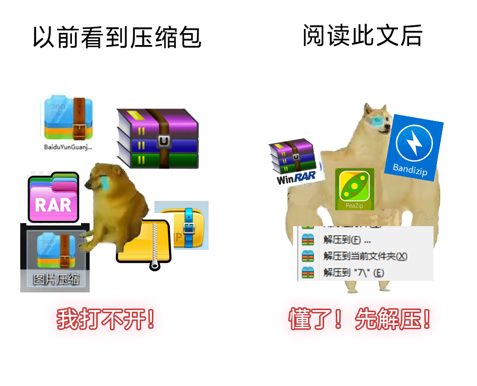
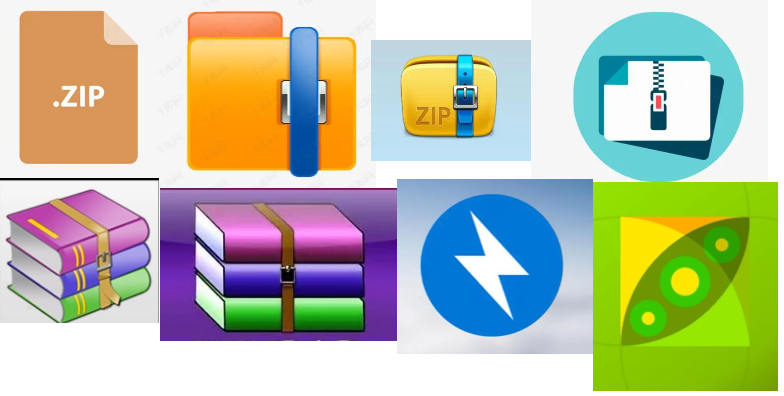
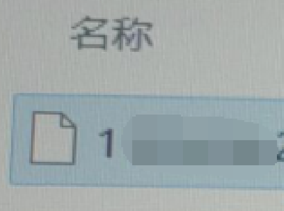
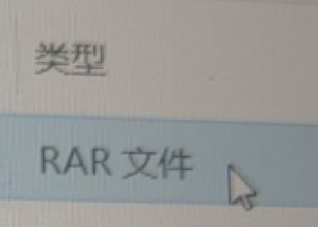
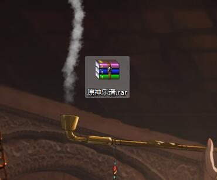
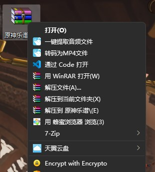
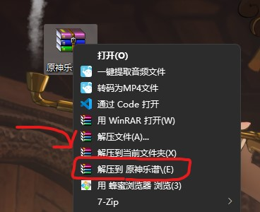

这是一些隐藏信息
这是一些关于此网页的隐藏信息，也是一些碎碎念，也是我编写此网页的无奈。通过反复点击网页最下方的语句大于10次即可打开。
压缩包，最常见的文件格式，每个利用计算机工作的人一定会接触，一定需要学会，也一定无法逃避的格式。21世纪，学生时代，我们一定会或多或少地接触到电子教学设备。对于有过义务教育和高中教育学历的人，我不相信，有人没见过别人如何解压压缩包。或者说，我没见过一个拥有完整义务教育经历的人，没听说过压缩包。
就算小学没有计算机，那么初中，高中，老师或多或少都会使用电子教学设备。
为什么有些《大学计算机基础》考试不考windows操作？因为太简单，几乎所有人都会。
就算小学没有机房，这些技能都是通过观察别人操作来自学的。还有通过百度，搜索都能得到压缩包教程。21世纪，信息获取如此简单，我们需要的，只有“耐心”。只要我们肯去认真阅读那几百字，甚至几十字的教程，压缩包的解压和压缩都能轻松学会。这本就非常简单。信息时代，小学没有计算机，初中没有计算机，都是借口。
为什么我有底气这么说？因为我看到过太多人，起床第一件事便打开游戏，每天花费数十小时在游戏、电竞、毫无营养的短视频上，直到深夜。他们宁可进化成能够穿越入电竞世界的电竞英雄，传送到无营养短视频世界里娱乐至死，也不愿意拿出几分钟的时间去搜索信息，学点信息时代生存技能。现在，哪怕用手机的语音助手，问一句“压缩包咋解压啊”，都能得到非常多有用的信息。在这个学习计算机知识如此简单的时代，拿小学、初中没接触过计算机来当挡箭牌，是展现自己不想学、不会学、不能学、学不进的反向操作。
这是单纯的无法在现代信息社会获取信息，信息爆炸时代，如果你只会用某音，某手，来获取哪怕随手一搜索就能得到的信息，如果面对打开的电脑，只会打开游戏，而且，如果连游戏打不开，游戏出bug都不会去网上查找信息，不会主动深入了解问题，甚至，连去百度上搜索相关错误信息都不会，而是只会玩，那么你应该立即深刻反思：
我是不是已经无法正常获取文字信息了？我是不是只能依赖无营养短视频的声、光、电刺激，才能进行哪怕解压压缩包这么最基本的学习？
我是不是已经成为游戏的一部分，我离不开游戏，我不是玩游戏，我在被游戏玩？我是不是把游戏带到现实世界，在现实世界里迷失自我，坐到电脑前，我只会玩游戏？我是不是因为游戏失去了太多，失去了学习能力，失去了学习态度，失去了在这个现代社会生活的基本技能？
这篇隐藏文章的目的并不是指责和批评那些人，而是警告，因为将来工作，一定会接触到计算机。绝大多数工作已经离不开计算机。年终总结，工作报告，真的会接触压缩包，事实胜于雄辩。可是，这是基础技能，公司，单位都不会进行培训。甚至如 Word 中调节行间距，都不会进行培训，都是默认掌握。
计算机二级考试，国家级别的考试，甚至压缩包也不是重点。这是因为这太简单了，没必要考。即使我们不从事计算机，不研究计算机，但我们不能不工作，不能不参与数字工作，不能离开计算机，因此，不能不会压缩包操作。
希望那些不知所措，甚至推卸责任的人尽快清醒过来，掌握这门简单，但受用一生的基础技能。
简介
压缩包的辨认和解压是计算机基础技能。然而，在互联网上搜索解压教程，会发现他们大多数晦涩难懂，操作复杂。

出于各种不方便的教程和解压压缩包的必要性，此教程将专注于解压一个压缩包，专注于办公实际需求。
压缩包冷知识
通常，压缩包会以
.rar
.zip
.7z
等扩展名结尾。这些文件的图标，在不同电脑上会呈现不同的样子。在有的电脑上，压缩包甚至会没有图标，而是以一个未知文件的身份存在。
原则上，压缩包拥有这样的图标：

而下图则展示了某些电脑上，压缩包是未知文件：
它的图标是白色的，

但是系统标注了其文件类型为RAR。

以上的文件，都是压缩包。只不过，有的电脑可能无法打开压缩包，这主要是因为没有安装解压软件导致的。此问题在文末有详细的解释。
无论是否能够显示压缩包的图标，这些文件一般不直接打开，如果直接双击，可能会使用系统默认的压缩管理软件打开。尽管打开后，和平时看到的文件夹一样，但里面的软件通常无法直接双击运行。
正确处理这类压缩包的方法，是使用右键点击，并解压压缩包。
解压一个压缩包
首先这是一个压缩包，以“原神乐谱.rar”为例

用鼠标在上面右键点击

选择“解压到 原神乐谱\”
注：根据压缩包名字的不同，此选项中“原神乐谱”部分会不一样。

这将在压缩包旁边生成一个文件夹，名为“原神乐谱”，打开就有了。
注：如果确定压缩包内文件较少，可以使用“解压到当前文件夹”选项。此选项会把压缩包内所有的文件直接拷贝到当前文件夹。
如果右键没有解压
在某些电脑，特别是新买的，新装过系统的电脑上，右键菜单内可能没有任何与解压有关的选项。因为解压软件并不附带在 Windows 操作系统上。
如果遇到这种情况，需要先安装一个解压软件。推荐首选开源、免费的软件，并从官方网站下载，或者从受信任的各类大型软件商店、软件管家内下载。
如何自己打包一个压缩包
既然已经学会了解压压缩包，那么这些压缩包是怎么来的？这是由其他用户通过打包压缩包得到的。打包教程在此不做赘述，读者可右键一个文件夹，自行探索出现的菜单选项。
求生说明
本人拥有完整的义务教育学历，并拥有更高的学习经历，对自己所说、所写的内容已充分理解并明确其含义，并有能力充分理解所说所写所能够造成的后果。
附带链接
Bandizip 解压软件官网
7-Zip 解压软件官网
- EOF -
In a world full of princesses, be a witch!